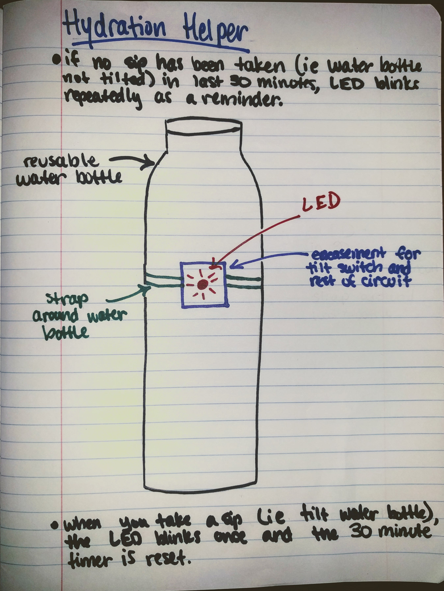

Colleen Carroll's HCDE 439 Final Project
Tilt Sensor Test
2-8-19

I started by building out the tilt sensor to make sure I knew how to get that working and read from it. The gif above shows the tilt sensor being used to turn on the onboard led (pin 13). The basic circuit design was taken from the Arduino InputPullupSerial example.
By building out the tilt sensor example, I realized that I had a floating input pin in my original proposed schematic (from 1-31-19). In the gif above, I'm using the built in pullup resistor on the arduino pin.
Tilt sensor test code
/* Tilt Sensor test */
int tiltPin = 2;
void setup() {
Serial.begin(9600);
pinMode(tiltPin, INPUT_PULLUP);
pinMode(13, OUTPUT); //use onboard LED for testing
}
void loop() {
int tiltVal = digitalRead(tiltPin);
Serial.println(tiltVal);
// The pull-up means the pushbutton's logic is inverted. It goes
// HIGH when it's open, and LOW when it's pressed. Turn on pin 13 when the
// sensor is tilted, and off when it's not
if (tiltVal == HIGH) {
digitalWrite(13, LOW);
} else {
digitalWrite(13, HIGH);
}
}
Updated proposed schematic
Now including a pullup current-limiting resistor
Proposed Schematic
1-31-19

Sketch
1-28-19
